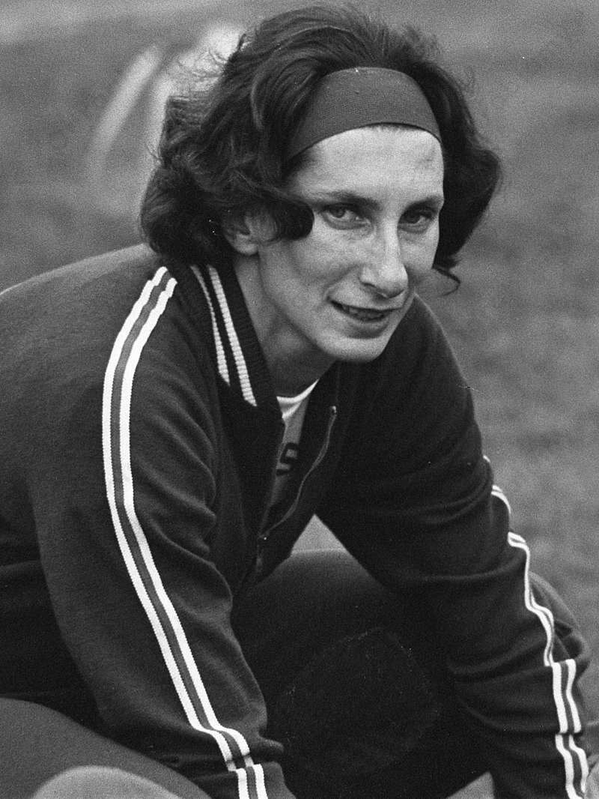

?
Sportowe sukcesy Polaków w latach 70. XX w.:
- płotkarka Teresa Sukniewicz ustanowiła rekord świata w biegu na 100 metrów przez płotki z wynikiem 12,8 s (20 czerwca 1970 r.),
- biegaczka Danuta Wierzbowska ustanowiła rekord Polski w biegu na 800 metrów - wynik: 2.03.7 s (28 lipca 1970 r.),
- płotkarz Tadeusz Kulczycki ustanowił rekord Polski w biegu na 400 metrów przez płotki z wynikiem 50.3 s (12 września 1970 r.),
- biegaczka Krystyna Składek ustanowiła rekord Polski w biegu na 1500 metrów - wynik: 4.20.5 s (12 września 1970),
- płotkarz Marek Jóźwik ustanowił rekord Polski w biegu na 110 metrów przez płotki z wynikiem 13.8 s (13 września 1970 r.),
-
Krystyna Hryniewiecka ustanowiła rekord Polski w biegu na 400 metrów z wynikiem 52.9 s (10 października 1970 r.),
- w 1974 r. mistrzami świata zostali również polscy siatkarze,
- sukcesy w kolarstwie odnosił Ryszard Szurkowski, a w tenisie ziemnym - Wojciech Fibiak,
- w 1976 r. na igrzyskach olimpijskich lekkoatletka Irena Szewińska zdobyła złoty medal i ustanowiła nowy rekord świata w biegu na 400 metrów,
- 16 października 1978 r. (w tym samym dniu, w którym Karol Wojtyła został wyniesiony na Stolicę Piotrową) Wanda Rutkiewicz jako trzecia kobieta i pierwsza Europejka - zdobyła najwyższy szczyt świata - Mount Everest (8850 m n.p.m.).

Irena Szewińska, źródło zdjęcia: Wikimedia Commons.